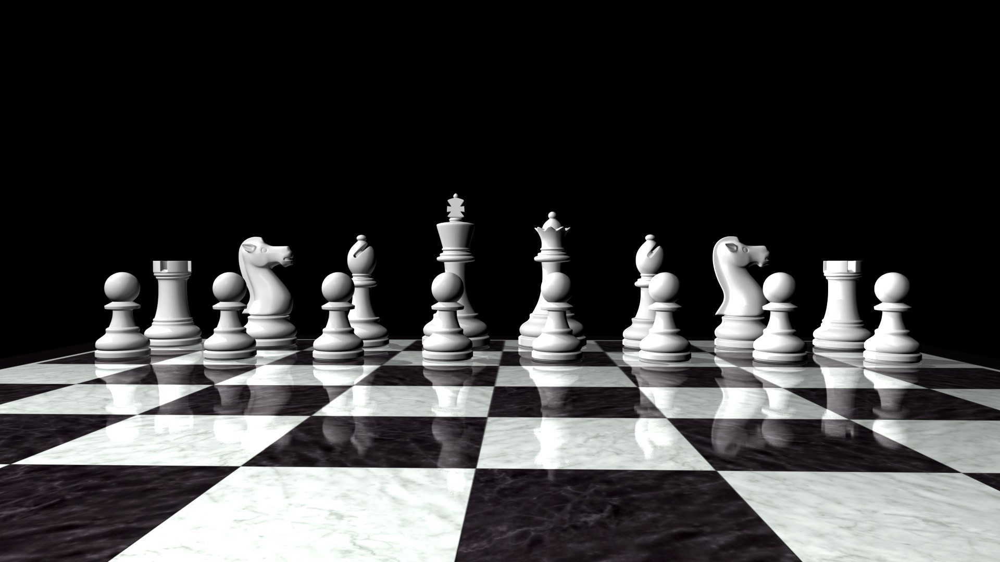

WELCOME TO THE CHESS KINGDOM
Chess is one of the oldest and most popular board games. It is played by two opponents on a checkered board with specially designed pieces of contrasting colours, commonly white and black.
Benefits of learning and playing chess
- Playing chess helps prevent memory loss
- It can help you become both a left-brained and a right-brained person.
- It can help you improve reading comprehension
- It helps stimulate your capacity for analysis and synthesis.
- It can improve a persons IQ
- It can serve as a form of therapy and rehabilitation.
- Playing chess can help improve our brain cells.
- It can help you improve reading comprehension Read more in this article click me
